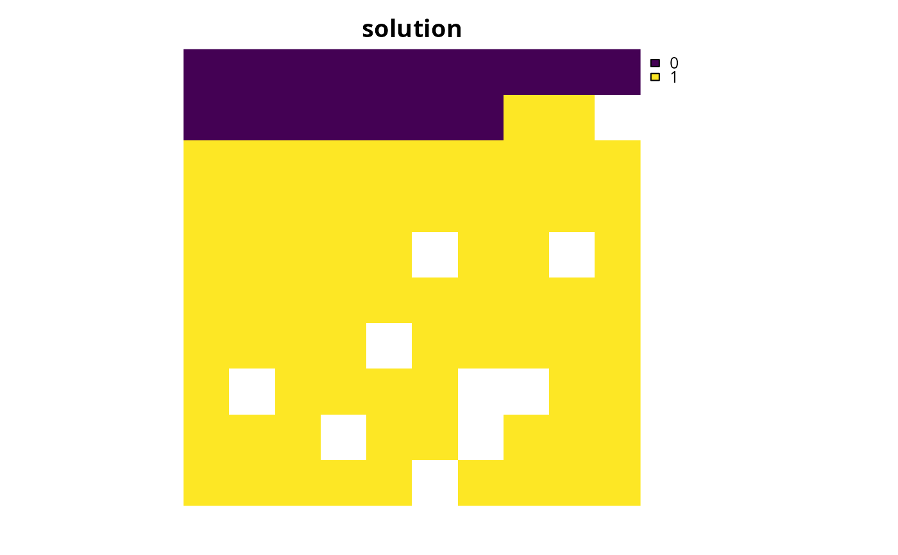

Specify targets based on interpolating absolute thresholds
Source:R/spec_interp_absolute_targets.R
spec_interp_absolute_targets.RdSpecify targets by interpolating them between thresholds expressed as the
same values as the underlying feature data (ignoring any specified
feature units).
Briefly, this method involves
(i) setting target thresholds for rare features to a particular percentage
threshold, (ii) setting target thresholds for common features
to a particular percentage threshold, and (iii) interpolating
target thresholds for features with spatial distributions that
range between the those for the rare and common features.
Additionally, features can (optionally) have their targets capped at a
particular threshold.
This method is especially useful for setting targets based on
interpolation procedures when features do not have data expressed as an
area-based unit of measurement.
Note that this function is designed to be used with add_auto_targets()
and add_group_targets().
Usage
spec_interp_absolute_targets(
rare_absolute_threshold,
rare_relative_target,
rare_absolute_target,
rare_method,
common_absolute_threshold,
common_relative_target,
common_absolute_target,
common_method,
cap_absolute_target,
interp_method
)Arguments
- rare_absolute_threshold
numericvalue indicating the absolute threshold for identifying rare features. This value must be expressed in the same units as the feature data. In particular, features with a total abundance smaller than this value will be considered rare during the target setting calculations.- rare_relative_target
numericvalue indicating the relative target for rare features. Note that this value must be a proportion between 0 and 1. For example, a value of 0.1 corresponds to 10%.- rare_absolute_target
numericvalue denoting the absolute target for rare features. This value must be expressed in the same units as the feature data. To avoid setting an absolute target for rare features, a missing (NA) value can be specified.- rare_method
charactervalue indicating how the target for rare features should be calculated. Available options include"min"and"max". For example, a value of"max"means that the target for a rare features is calculated as the maximum based onrare_relative_targetandrare_absolute_target. Note thatrare_methodwill have no effect on the target calculations ifrare_absolute_targetis a missing (NA) value.- common_absolute_threshold
numericvalue indicating the absolute threshold for identifying common features. This value must be expressed in the same units as the feature data. In particular, features with a total abundance greater than this value will be considered common during the target setting calculations.- common_relative_target
numericvalue denoting the relative target for common features. Note that this value must be a proportion between 0 and 1. For example, a value of 0.1 corresponds to 10%.- common_absolute_target
numericvalue denoting the absolute target for common features. This value must be expressed in the same units as the feature data. To avoid setting an absolute target for common features, a missing (NA) value can be specified.- common_method
charactervalue indicating how the target for common features should be calculated. Available options include"min"and"max". For example, a value of"max"means that the target for a common feature is calculated as the maximum based oncommon_relative_targetandcommon_absolute_target. Note thatcommon_methodwill have no effect on the target calculations ifcommon_absolute_targetis a missing (NA) value.- cap_absolute_target
numericvalue denoting the absolute target cap. This value must be expressed in the same units as the feature data. In particular, all targets are clamped to this value during target setting calculations. To avoid setting a target cap, a missing (NA) value can be specified.- interp_method
charactervalue denoting the interpolation method. Available options include"linear"for linear interpolation and"log10"for log-linear interpolation.
Value
An object (TargetMethod) for specifying targets that
can be used with add_auto_targets() and add_group_targets()
to update the targets for a problem().
Details
This method has been applied to set target thresholds at global and national scales (e.g., Butchart et al. 2015; Rodrigues et al. 2004; Polak et al. 2015). It is based on the rationale that species with a smaller geographic distribution are at a greater risk of extinction, and so require a larger percentage of their geographic distribution to be represented by a prioritization (Rodrigues et al. 2004). When using this method in a planning exercise, it is important to ensure that the threshold parameters reflect the stakeholder objectives. Additionally, the threshold parameters may need to set according to the spatial extent of the planning region.
Mathematical formulation
This method provides a flexible approach for setting target thresholds based
on an interpolation procedure and the feature data.
To express this mathematically, we will define the following terminology.
Let \(f\) denote the total abundance of a feature,
\(a\) the threshold for identifying rare features
(per rare_absolute_threshold),
\(b\) the relative targets for rare features
(per rare_relative_target),
\(c\) the absolute targets for rare features
(per rare_absolute_target),
\(d()\) the function for calculating targets for rare features
as a maximum or minimum value (per rare_method),
\(e\) the threshold for identifying common features
(per common_absolute_threshold),
\(g\) the relative targets for common features
(per common_relative_target),
\(h\) the absolute targets for common features
(per common_absolute_target),
\(i()\) the method for calculating targets for common features
as a maximum or minimum value (per common_method),
\(j\) the target cap (per cap_absolute_target), and
\(k()\) the interpolation method for features with a spatial distribution
that is larger than a rare features and smaller than a common feature
(per interp_method).
In particular, \(k()\) is either a linear or log-linear interpolation
procedure based on the thresholds for identifying rare and common features
as well as the relative targets for rare and common features.
Given this terminology, the target threshold (\(t\)) for the feature
is calculated as follows.
If \(f < a\), then \( t = min(d(c, b \times f), j)\).
If \(f > e\), then \( t = min(i(h, g \times f), j)\).
If \(a \leq f \leq e\), then \(t = min(k(f, a, b, e, g), j)\).
References
Butchart SHM, Clarke M, Smith RJ, Sykes RE, Scharlemann JPW, Harfoot M, Buchanan GM, Angulo A, Balmford A, Bertzky B, Brooks TM, Carpenter KE, Comeros‐Raynal MT, Cornell J, Ficetola GF, Fishpool LDC, Fuller RA, Geldmann J, Harwell H, Hilton‐Taylor C, Hoffmann M, Joolia A, Joppa L, Kingston N, May I, Milam A, Polidoro B, Ralph G, Richman N, Rondinini C, Segan DB, Skolnik B, Spalding MD, Stuart SN, Symes A, Taylor J, Visconti P, Watson JEM, Wood L, Burgess ND (2015) Shortfalls and solutions for meeting national and global conservation area targets. Conservation Letters, 8: 329–337.
Polak T, Watson JEM, Fuller RA, Joseph LN, Martin TG, Possingham HP, Venter O, Carwardine J (2015) Efficient expansion of global protected areas requires simultaneous planning for species and ecosystems. Royal Society Open Science, 2: 150107.
Rodrigues ASL, Akçakaya HR, Andelman SJ, Bakarr MI, Boitani L, Brooks TM, Chanson JS, Fishpool LDC, Da Fonseca GAB, Gaston KJ, Hoffmann M, Marquet PA, Pilgrim JD, Pressey RL, Schipper J, Sechrest W, Stuart SN, Underhill LG, Waller RW, Watts MEJ, Yan X (2004) Global gap analysis: priority regions for expanding the global protected-area network. BioScience, 54: 1092–1100.
See also
Other target setting methods:
spec_absolute_targets(),
spec_area_targets(),
spec_duran_targets(),
spec_interp_area_targets(),
spec_jung_targets(),
spec_max_targets(),
spec_min_targets(),
spec_polak_targets(),
spec_pop_size_targets(),
spec_relative_targets(),
spec_rl_ecosystem_targets(),
spec_rl_species_targets(),
spec_rodrigues_targets(),
spec_rule_targets(),
spec_ward_targets(),
spec_watson_targets(),
spec_wilson_targets()
Examples
# \dontrun{
# set seed for reproducibility
set.seed(500)
# load data
sim_pu_raster <- get_sim_pu_raster()
sim_features <- get_sim_features()
# this function sets targets based on the total abundance of the features
# (i.e., sum of planning unit values for the feature) and does not
# consider the spatial area covered by the planning units
# display the total abundance of the features
print(terra::global(get_sim_features(), "sum", na.rm = TRUE))
#> sum
#> feature_1 83.29345
#> feature_2 31.21137
#> feature_3 71.95670
#> feature_4 42.66032
#> feature_5 56.70751
# create problem with interpolated targets.
# here, targets will be set as 70% for features with a total abundance
# (i.e., sum of planning unit values for the feature) smaller than 50,
# 20% for features with at total abundance greater than 70,
# linearly interpolated for features with an intermediate range size,
# and capped at a total abundance of 100
p1 <-
problem(sim_pu_raster, sim_features) %>%
add_min_set_objective() %>%
add_auto_targets(
method = spec_interp_absolute_targets(
rare_absolute_threshold = 50,
rare_relative_target = 0.7,
rare_absolute_target = NA, # not used
rare_method = "max", # not used
common_absolute_threshold = 70,
common_relative_target = 0.2,
common_absolute_target = NA, # not used
common_method = "max", # not used
cap_absolute_target = 100,
interp_method = "linear"
)
) %>%
add_binary_decisions() %>%
add_default_solver(verbose = FALSE)
# solve problem
s1 <- solve(p1)
# plot solution
plot(s1, main = "solution", axes = FALSE)

# }